Perifèrics¶
Els perifèrics són dispositius que permeten informació entre i deixar un ordinador.
Els perifèrics d’entrada són com els sentits d’un ordinador. Recopilen informació de l'estranger perquè l'ordinador pugui "veure" amb una càmera, "escoltar" amb un micròfon o "sentir" la posició de l'usuari amb un ratolí.
Els perifèrics de sortida són com els músculs de l’ordinador, que li permeten externalitzar la informació que hi ha al seu interior. Així, gràcies als perifèrics de sortida, podem veure la informació de l’ordinador en forma d’imatges d’un monitor, imprès en un full per una impressora, en forma de sons d’un altaveu o vibració d’un telèfon intel·ligent.
Índex de contingut:
Classificació de perifèrics¶
- Perifèrics d’entrada
- Perifèrics de sortida
- Perifèrics d’entrada/sortida
Perifèrics d’entrada¶
Són dispositius que permeten a l’ordinador obtenir informació de l’estranger, mitjançant sensors i interfícies d’usuari d’entrada de dades.
- Ratolí
El ratolí <https://es.wikipedia.org/wiki/rat%C3%B3N_ (Informeu%C3%A1tica)> __ o ratolí és un dispositiu que s'utilitza per manejar amb una mà un punter en un entorn gràfic d'ordinador.
El ratolí detecta els moviments en dues dimensions sobre una superfície plana on es basa. Un punter o fletxa de la pantalla de l’ordinador mostra els moviments del ratolí.
El ratolí també sol tenir diversos botons i una roda que es pot girar, per interactuar amb les pantalles de l’entorn gràfic.
Malgrat l’aparició de noves tecnologies, com la pantalla tàctil, el ratolí encara s’utilitza àmpliament.
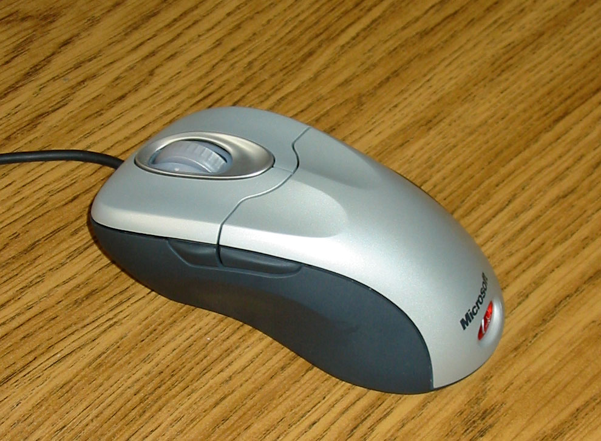
Ratolí de cable.¶
Nzeemin <https://commons.wikimedia.org/wiki/file:microsoft_intellimouse_explorer_40a.jpg> __, cc by-sa 3.0 <https://creativecommons.org/licenses/by/3.0/deed.en> `` `` `` `` `` `` `` `` `` `` `` `` `` `` `Wikimedia Commons.- Teclat
El teclat <https://es.wikipedia.org/wiki/teclado_ (Informeu%c3%a1tica)>`__ és un dels primers dispositius d'entrada de l'ordinador que han existit. Està inspirat en el teclat TypewRiter, amb la configuració de les tecles QWERTY.
El teclat és gairebé essencial per poder escriure text en un ordinador. Malgrat el desenvolupament de noves tecnologies, com el reconeixement de veu als telèfons intel·ligents, el teclat de la pantalla encara s’utilitza àmpliament.
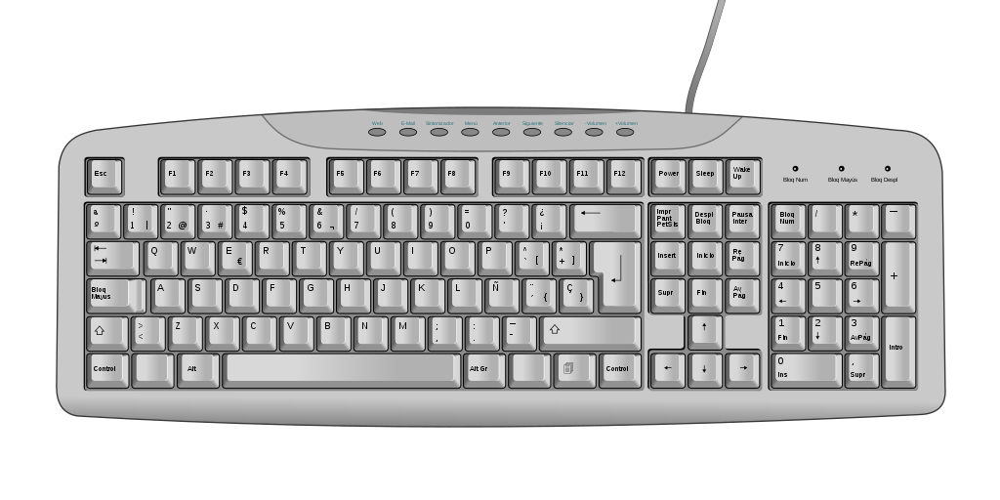
Teclat espanyol.¶
Oona räisänen <https://commons.wikimedia.org/wiki/file:computer nom ` `` `` `` `` ``El teclat de l’ordinador estàndard és 102 tecles a Europa i es divideixen en els grups següents.
- Bloc de funcions F1 a F12.
- Bloc alfanumèric amb números de 0 a 9, lletres i algunes claus especials com la pestanya, l’espaiador, l’entrada, etc.
- Bloc especial amb claus de direcció i altres com Start, End, Suprimir, Inserir, Imprimir pantalla, etc.
- Bloc numèric a la dreta, amb els números i les operacions bàsiques +, -, *, /.
- Escàner
El Scanner <https://es.wikipedia.org/wiki/ESC%C3%A1ner_inform%C3%A1tico> __ és un perifèric d'entrada que s'utilitza per fer fotografies digitals de documents, diapositives o transparències.
La resolució mínima recomanada és de 150dpi (punts per polzada). Tot i que l’escàner actual pot arribar fàcilment a 600dpi o majors resolucions, això genera dades de dades més grans de les necessàries.
Els escàners es poden combinar amb OCR o reconeixement de caràcters òptics de caràcters per transformar un text en un format d'imatge en un text digitalitzat.
- Càmera web
La Webcam, en anglès web, és una petita càmera digital connectada a l'ordinador amb la qual podeu capturar imatges i vídeo fixes (imatge en moviment) per transmetre -les a distància en línia.
Des del començament dels confinaments el 2020 amb motiu de la Pandèmia Covid, les videoconferències per celebrar reunions com Zoom, WhatsApp, equips de Microsoft, Google Meet, Skype, WebX, etc.
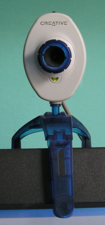
Càmera web externa.¶
Entreeczek <https://commons.wikimedia.org/wiki/file:Creative.webcam.jpg> __, cc by-sa 3.0, via wikimedia commons.- Micròfon
El micròfon és un dispositiu que recopila el so de l'entorn i el tradueix en senyals elèctrics. Posteriorment un: terme: `targeta de so 'tradueix aquests senyals elèctrics a senyals digitals que podeu utilitzar l'ordinador.
En alguns casos, els micròfons de les càmeres web, de portàtils o telèfons intel·ligents ja inclouen un convertidor analògic-digital per convertir els senyals elèctrics que deixen el micròfon a senyals digitals, però en aquests casos solen tenir una qualitat inferior a la quan s’utilitza un micròfon i una targeta de so dedicada.
Segons la tecnologia del micròfon, aquests poden ser magneto-dinàmiques, condensador, carbó o piezoelèctric.
- Tauleta gràfica
La tauleta gràfica o la tauleta digitalitzadora <https://es.wikipedia.org/wiki/ablete_digitizador>`__ és un perifèric que permet a l'usuari introduir gràfics o dibuixos de mà, com ho faria amb un llapis i un paper. També us permet apuntar i assenyalar els objectes que es troben a la pantalla de l’ordinador.
Consisteix en una superfície plana en la qual l’usuari pot dibuixar una imatge mitjançant l’estiletto (ploma) que ve al costat de la tauleta. Segons la tauleta, la imatge pot aparèixer a la tauleta i a l’ordinador alhora o aparèixer només a l’ordinador.
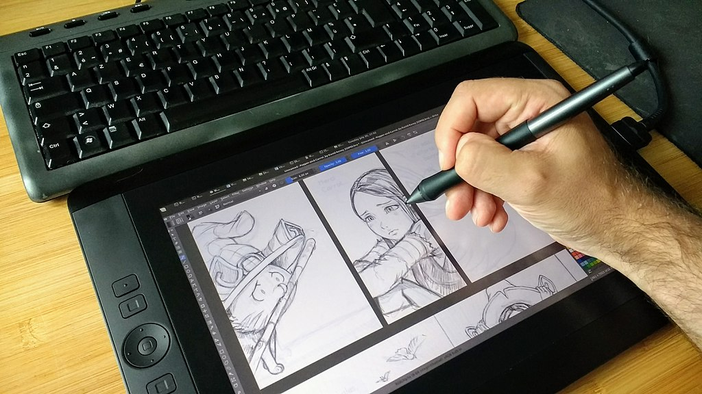
Tauleta gràfica¶
David Revoy <https://commons.wikimedia.org/wiki/file:penciling_on_wacom_cintiq_13hd_by_david_revoy.jpg> __, `cc by-sa 4.0 <https://creativecommons.org/licenses/by/4.0/deed.en> `__, via Wikimedia Commons.- GPS
El GPS o el sistema de posicionament global és un sistema del departament de defensa dels Estats Units que utilitza satèl·lits artificials que envien senyals de ràdio, per localitzar un receptor en qualsevol posició del planeta amb una precisió de pocs metres. Sistemes similars són el sistema Galileu d’Europa o el sistema de glonass rus.
El GPS s’utilitza àmpliament tant en telèfons intel·ligents com en dispositius desgastables. Permet serveis com ara la navegació per punt de punt, la ubicació dels amics propers, el càlcul de les rutes de corredors, etc.
La ubicació d’una persona és informació que les grans corporacions consideren molt valuoses. On viviu, quins llocs i quines persones feu, a quina hora aneu a casa o treballeu, en quins vehicles us moveu, etc. Tota aquesta informació es pot deduir de la ubicació del GPS i és especialment sensible i privada, per la qual cosa hem de restringir l’ús de GPS als moments i aplicacions que considerem essencials.
- Acceleròmetre
L’acceleròmetre <https://es.wikipedia.org/wiki/celer%C3%B3meter>`__ és un sensor capaç de mesurar les acceleracions. Està integrat en telèfons intel·ligents, polseres d’activitat física, controls de consoles de vídeo, etc.
Aquest sensor pot detectar el moviment que fem quan caminem, correm o quan moem els braços en diverses direccions. En combinació amb el giroscopi, permet conèixer els moviments que realitzem amb una gran precisió.
Aquests sensors serveixen per realitzar jocs de ball en què el comandament sap on és la nostra mà i com la mourem. També ens permet saber com caminem o predirem i predir el consum d’energia feta o fins i tot, en aplicacions mèdiques, per predir l’aparició d’Alzheimer.
Una altra aplicació de l’acceleròmetre és saber on es troba el sòl (mitjançant l’acceleració de la gravetat) i, a partir d’aquesta informació, gireu les fotografies realitzades de manera que es mostrin sempre.
- Giroscopi
- El Gyroscope és un sensor que serveix per conèixer l'orientació a l'espai d'un objecte. Està integrat en telèfons intel·ligents, polseres d’activitat física, controls de consoles de vídeo, etc. En combinació amb l’acceleròmetre, us permet conèixer molt precisament quins moviments fem.
- Magnetòmetre
- El magnetòmetre <https://es.wikipedia.org/wiki/magnet%C3%B3meter#uso_en_dispositivos_m%C3%B3Viles> __ és un sensor de camp magnètic. Com que la Terra té un camp magnètic, amb el magnetòmetre que inclou un telèfon intel·ligent, podeu situar el nord com ho fa un ** Compass **.
- Termòmetre de la bateria
- El termòmetre de la bateria serveix per conèixer la temperatura de la bateria del telèfon intel·ligent. A partir d’aquesta informació podem conèixer l’ús que estem donant al telèfon intel·ligent perquè un major ús es tradueix en una temperatura de bateria més elevada. També podem saber si es carrega el telèfon o, indirectament, la temperatura ambient.
{kind=link}
{kind=link}
{kind=link}
{kind=link}
{kind=link}
Perifèrics de sortida¶
Són dispositius que permeten que la informació de l’ordinador es mostri fora.
- Observar
El Monitor Computer <https://es.wikipedia.org/wiki/monitor_de_computadora> __ també anomenat pantalla, és un dels principals dispositius de sortida de l'ordinador per mostrar informació a l'usuari. També es pot considerar una entrada perifèrica si és tàctil.
La tecnologia que actualment predomina és la de les pantalles planes de ** cristall líquid (LDC) ** i comencen a utilitzar cada cop més sovint el `` OLED o AMOLED <https://es.wikipedia.org/wiki/diod_org%C3%C3%C3%C3%C3%C3%
La mida d’un monitor es mesura en polzades de la diagonal de la pantalla de visualització (sense el marc exterior). Les mides típiques són de 5 "de telèfons intel·ligents a 24 " d'un monitor típic de PC.
La resolució mínima d’un monitor d’ordinador actual hauria de ser Full HD (1920x1080 píxels), tot i que els ordinadors portàtils, tauletes i telèfons intel·ligents més petits sovint no arriben a aquesta resolució. WXGA és una resolució estàndard una mica inferior amb 1366x768 píxels.
El ** píxel ** és el punt més petit que es pot representar en un monitor.
- Projector de vídeo
El Projector de vídeo <https://es.wikipedia.org/wiki/projector_de_video> __ o projector canyon és un dispositiu òptic que projecta una imatge fixa o en moviment en una pantalla de paret o projecció, a partir d’un senyal de vídeo que prové d’un ordinador. Això permet visualitzar la informació de l’ordinador per a un auditori sencer com ara una pantalla de pel·lícula.
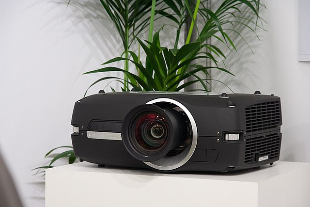
Projector de vídeo.¶
Christian Herzog, `` `` `` `` `` `` `` `` `` `` `` `` `` `` `` `` `` `` `` `` `` `` <https://creativecommons.org/licenses/by/2.0/deed.en>`__, a través de Wikimedia Commons.- Impresora
La "impressora <https://es.wikipedia.org/wiki/impresora>`__ és un perifèric de sortida que permet imprimir textos i gràfics en paper de manera permanent.
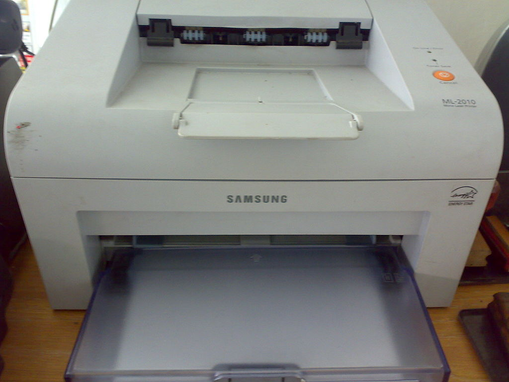
Impressora làser.¶
Alex Muñoz1 <https://commons.wikimedia.org/wiki/file:samsung_ml-2010.jpg> __, cc per 2.0 <https://creativecommons.org/licenses/by/2.0/ded.en> `__, via commons Wikimedia.Les tres tecnologies més habituals són la tecnologia `` làser amb tòner <https://es.wikipedia.org/wiki/impressora#t%C3%B3ner>`__,` Ink Injection Technology <https://es.wikipedia.org/wiki/impressoria#in -leci%c3%b3n_detinta>>`__ i la tecnologia tèrmica <https://es.wikipedia.org/wiki/impresora_t%C3%A9Rmica>`__ S'utilitza per imprimir els bitllets de compra.
- DAC
El dac o un convertidor digital per a analògic és un perifèric de sortida que permet que els fitxers digitals de l’ordinador es converin en música o música analògica amb alta fidelitat, més gran que la d’una targeta de so simple.
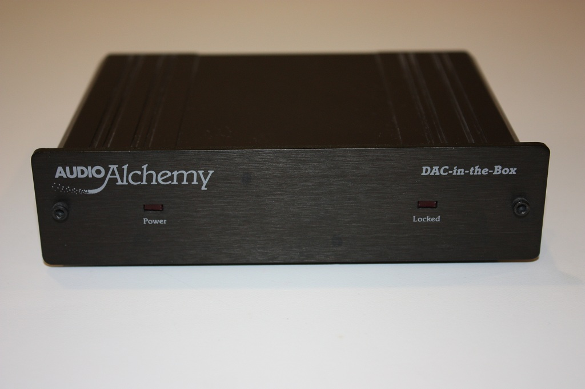
Audio DAC.¶
`` Vg30et <https://commons.wikimedia.org/wiki/file:dac_in_the_box.jpg>`__,` cc by-sa 3.0 <https://creatcommons.org/licenses/by/3.0/deed.en>`__, via wikimedia commons.- Parlants
Els "altaveus <https://es.wikipedia.org/wiki/altavoz>`__ per a l'ordinador normalment estan acompanyats d'un amplificador de so per augmentar el nivell del senyal de sortida de l'ordinador i produir sons d'alt volum.
Els sistemes estèreo normalment s’utilitzen amb dos altaveus, un a la dreta i un a l’esquerra, però també podeu utilitzar el so d’embolcall 5.1 <https: /.wikipedia.org/wiki/sonido_envolvolvento_5.1>`__ si el fitxer d’àudio/vídeo original i la targeta de so ho permeten.
- Pilots lluminosos dirigits
Els pilots lluminosos led són petites llums que denuncien els estats de l'ordinador. Les caixes d’ordinador i els teclats solen portar pilots per advertir que l’ordinador està encès, que el disc dur funciona, que la càrrega de la bateria s’està produint o que s’ha activat el teclat numèric.
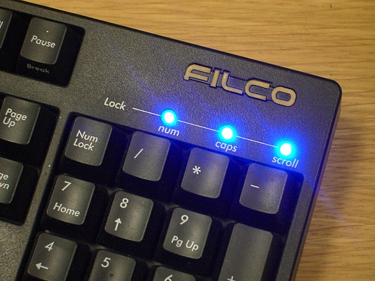
Pilots LED d’un teclat.¶
Daniel Beardsmore <https://commons.wikimedia.org/wiki/file:lock_leds.jpg> __, domini públic, a través de Wikimedia Commons.- Motor de vibracions
El motor de vibració s’utilitza en telèfons intel·ligents per indicar un esdeveniment en silenci. D’aquesta manera, el motor pot denunciar una trucada entrant o que ha arribat un nou missatge amb un nivell de soroll molt baix.
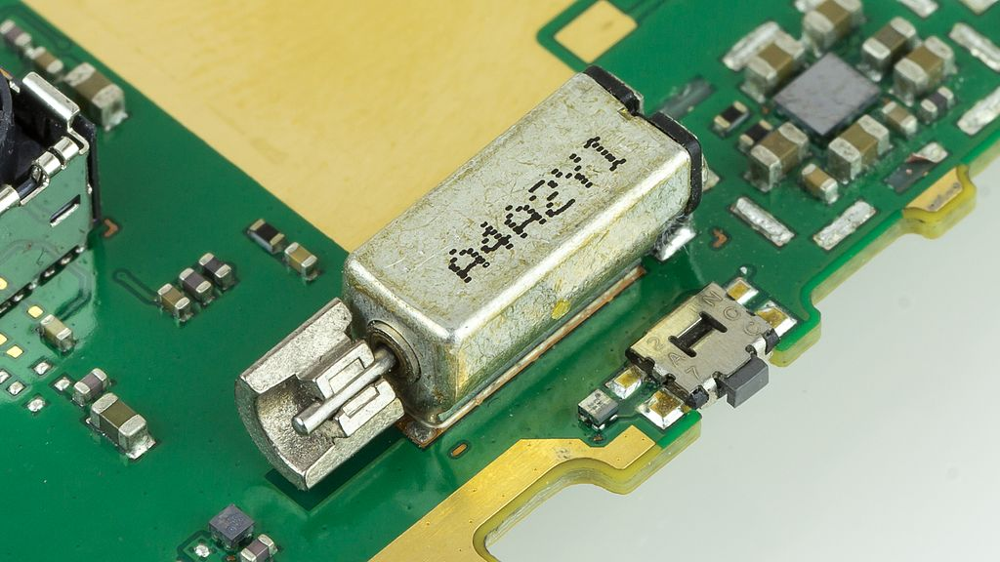
Motor que produeix vibracions.¶
Raimond Spekking <https://commons.wikimedia.org/wiki/file:nokia_x2-02_-_vibrating_alert_motor-2410.jpg> __, `cc by-sa 4.0 <https://creativecommons.org/licenses/by/4.0/deed.en>> `__, via Wikimedia Commons.- Braille Line
La Braille Line és un perifèric de sortida que transforma el text de l’ordinador en una sèrie de punts braille perquè les persones amb discapacitats visuals puguin llegir -hi.
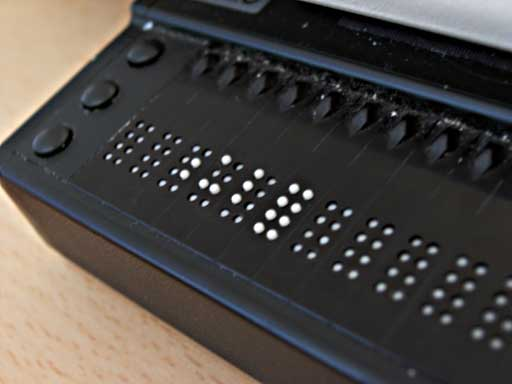
Dispositiu Braille.¶
Ixitixel <https://commons.wikimedia.org/wiki/file:Refreshable_braille_display.jpg> __, cc by-sa 3.0 <https://creativecommons.org/licenses/by/3.0/deed.en> `` `` `` `` `` `` `` `` `` `` `` `` `` `` `` `` `` `` ` `` `` `` `` `` `` `` ``
{kind=link}
{kind=link}
{kind=link}
{kind=link}
{kind=link}
{kind=link}
{kind=link}
{kind=link}
Perifèrics d’entrada/sortida¶
Aquests perifèrics agrupen diversos dispositius en un i permeten la sortida de dades d’entrada i de l’ordinador.
- Pantalla tàctil
La "pantalla tàctil <https://es.wikipedia.org/wiki/panalla_t%C3%A1Cl>`__ És una pantalla d'ordinador que té detectors que permeten conèixer la posició del dit quan es juga o quan es mou a la seva superfície. Això fa que la pantalla sigui interactiva i permet l’entrada de sortida i de dades.
Amb la pantalla tàctil podeu donar comandes a un dispositiu.
Pantalla tàctil d’un telèfon intel·ligent.¶
`Victorgrigas <https://commons.wikimedia.org/wiki/file:bangalore_wikipedian_on_phone_5_cleop a través de Wikimedia Commons.- Impressora multifunció
La impressora multifunció és una combinació d'impressora amb un escàner, de manera que permet l'entrada i sortida de dades. Aquestes dues funcions us permeten actuar com a fotocopiador o com a fax.
- Casc de realitat virtual
El "casc de realitat virtual <https://es.wikipedia.org/wiki/casco_de_reality_virtual>`__ també anomenat ulleres de realitat virtual, és un dispositiu que permet reproduir imatges creades per ordinador en una pantalla molt a prop dels ulls, de manera que les imatges semblen molt més grans que les de pantalles normals. El so estèreo també es reprodueix per auriculars construïts.
El casc de realitat virtual té sensors de posició i de moviment que permeten saber on es veu l’usuari, per acompanyar les imatges presentades als moviments del cap, de manera que l’usuari sembla estar immers en la realitat virtual que mostra el dispositiu.
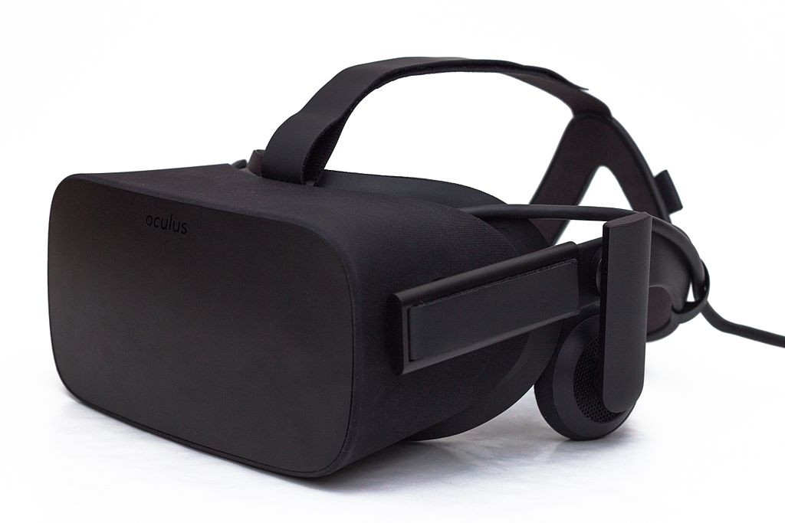
Casc de realitat virtual.¶
Samwalton9, cc by-sa 4.0 <https://creativecommons.org/licenses/by/4.0/deed.en> `` `` `` `` `` `` `` `` `` `` `` `` `` `` `` `` `` `` `` `` `` `` `` `` `` `` `- Targeta de son
La "targeta de so <https://es.wikipedia.org/wiki/tarjeta_de_sonido>`__ és un dispositiu d'entrada/sortida que es tradueix entre senyals analògics i senyals digitals.
Les senyals d’entrada a l’ordinador des d’un micròfon, des d’una guitarra elèctrica o d’un reproductor de so són analògics. La targeta de so transforma aquestes entrades analògiques mitjançant un ADC <https://es.wikipedia.org/wiki/conversi%C3%B3N_ANAL%C3%B3GICA-Digital> `__ en senyals digitals que pot processar l'ordinador.
Quan volem que l’ordinador reprodueixi un so, cal convertir els senyals digitals de l’ordinador en senyals analògics que es poden amplificar i enviar als altaveus. La targeta de so té un dac que realitza aquesta conversió de senyals digitals a senyals analògics.
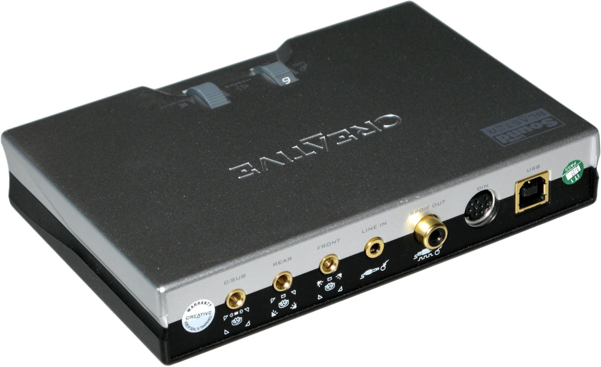
Targeta de so externa.¶
{kind=link}
{kind=link}
{kind=link}
{kind=link}